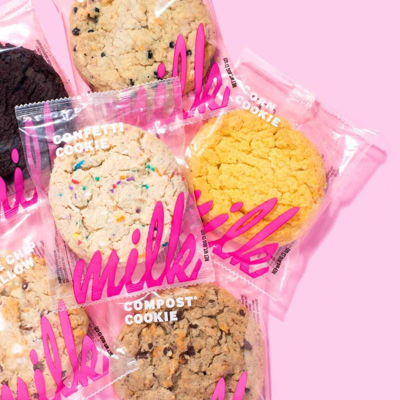
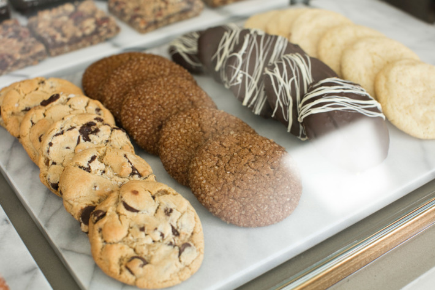

Milk Bar
Despite the unfortunate name, these sweet and savory compost cookies are one of the most delicious cookies in the city. This unique creation is made with coffee and oats as well as chocolate, butterscotch, pretzels & chips.

Levain Bakery
These cookies are big enough to use as a plate for normal, less opulent cookie. The Chocolate Chip Walnut at Levain Bakery is definitely one for your cookie bucket list, but beware, this is a city favorite so there will be a line.

Mah Ze Dahr Bakery
The textures and flavors they coax out of those mixing bowls and ovens in the back is extraordinary, and across all sorts of different types of pastries. As far as cookies go, Mah-Ze-Dahr offers several varieties that could qualify for absolute best anywhere award.